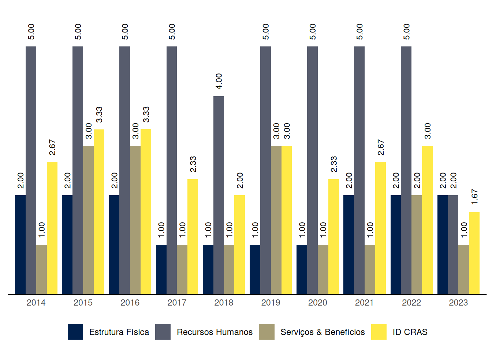

São Brás
Relatório de Indicadores 2023 do município de São Brás, Alagoas
1 ID CRAS: Indice de Desenvolvimento do CRAS
O ID CRAS é um indicador composto por três dimensões. Cada dimensão possui uma nota na qual quanto mais próxima de 5, melhor o índice e, do contrário, insatisfatório.
O Gráfico 1 mostra a evolução das médias do ID CRAS ao longo dos anos no município de São Brás, Alagoas.
| Capacidade de até: | Quantidade |
|---|---|
| 2.500 famílias referenciadas | 1 |
| 3.500 famílias referenciadas | 0 |
| 5.000 famílias referenciadas | 0 |
As seções a seguir apresentam os resultados do município de São Brás em cada uma das dimensões do ID CRAS, bem como os requisitos para se alcançar os níveis superiores.
1.1 ID CRAS: Dimensão Estrutura Física
1.1.1 CRAS com capacidade de referenciamento para até 2.500 ou 3.500 famílias
Na dimensão Estrutura Física, o nível de ID do CRAS com capacidade de referenciamento para até 2.500 ou 3.500 famílias no município de São Brás é 2.
O CRAS de nível 2, com capacidade de referenciamento para até 2.500 ou 3.500 famílias, na dimensão Estrutura Física:
- Possui no mínimo 2 salas de atendimento; e
- Possui pelo menos 1 banheiro.
Para alcançar o nível 3 na dimensão Estrutura Física, o CRAS com capacidade de referenciamento para até 2.500 ou 3.500 famílias precisa, além dos requisitos do nível 2:
- Possuir recepção; e
- Possuir acessibiliadade, ao menos parcial.
1.1.2 CRAS com capacidade de referenciamento para até 5.000 famílias
São Brás não tem CRAS com capacidade de referenciamento para até 5.000 famílias.
1.2 ID CRAS: Dimensão Recursos Humanos
1.2.1 CRAS com capacidade de referenciamento para até 2.500 famílias
Na dimensão Recursos Humanos, o nível de ID do CRAS com capacidade de referenciamento para até 2.500 famílias no município de São Brás é 2.
O CRAS de nível 2, com capacidade de referenciamento para até 2.500 famílias, na dimensão Recursos Humanos:
- Possui no mínimo 3 profissionais, sendo, pelo menos 2 com nível superior*; e
- Possui pelo menos 1 Assistente Social ou 1 Psicólogo.
Para alcançar o nível 3 na dimensão Recursos Humanos, o CRAS com capacidade de referenciamento para até 2.500 famílias precisa, além dos requisitos do nível 2:
- Possuir no mínimo 4 (6, se EV) profissionais, sendo pelo menos 2 (4, se EV) com nível superior; e
- Possuir no mínimo 1 Assistente Social (2, se EV).
1.2.2 CRAS com capacidade de referenciamento para até 3.500 famílias
São Brás não tem CRAS com capacidade de referenciamento para até 3.500 famílias.
1.2.3 CRAS com capacidade de referenciamento para até 5.000 famílias
São Brás não tem CRAS com capacidade de referenciamento para até 5.000 famílias.
1.3 ID CRAS: Dimensão Serviços & Benefícios
Na dimensão Serviços & Benefícios, o nível de ID do CRAS no município de São Brás é 1.
O CRAS de nível 1 na dimensão Serviços & Benefícios em município de porte Pequeno I:
- Não realiza alguma(s) das seguintes atividades essenciais do PAIF: acompanhamento de famílias, e/ou grupo/oficina com famílias, e/ou visitas domiciliares, e/ou orientação; ou
- Possui articulação frágil ou inexistente com os Serviços de Educação e com os Serviços de Saúde; ou
- Não possui profissionais de Serviço Social nem de Psicologia.
Para alcançar o nível 2 na dimensão Serviços & Benefícios, o CRAS em município de porte Pequeno I precisa:
- Executar o PAIF, realizando no mínimo as seguintes atividades: acompanhamento de famílias, grupo/oficina com famílias e visitas domiciliares; e
- Possuir forte articulação com pelo menos um dos seguintes Serviços: Serviços de Educação e Serviços de Saúde.
2 ID CREAS: Indice de Desenvolvimento do CREAS
O ID CREAS é um indicador composto por três dimensões. Cada dimensão possui uma nota na qual quanto mais próxima de 5, melhor o índice e, do contrário, insatisfatório.
São Brás não tem CREAS.